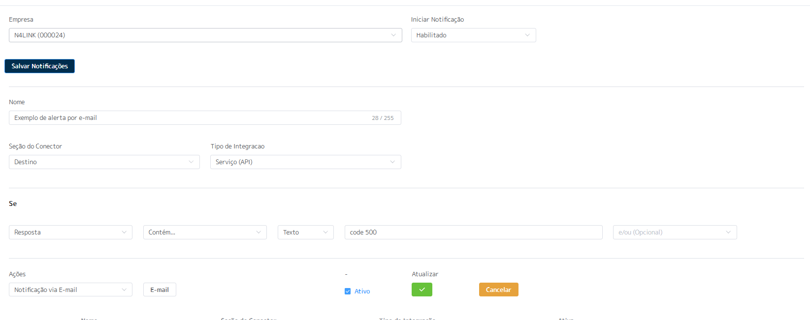
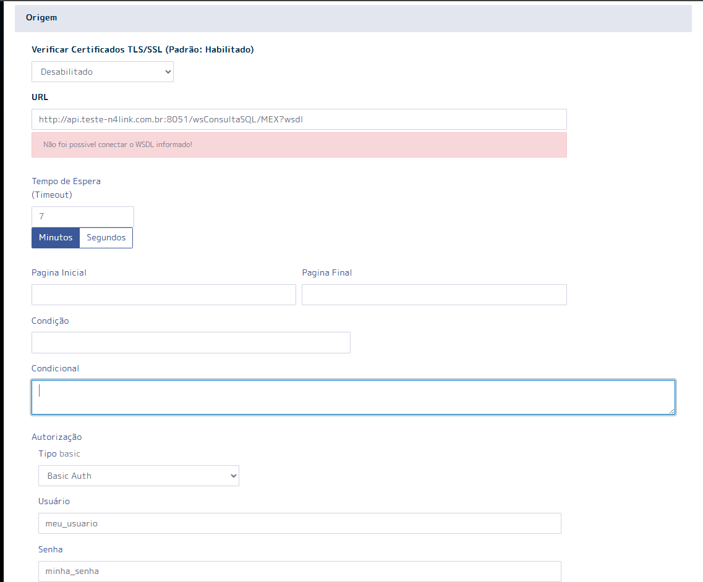
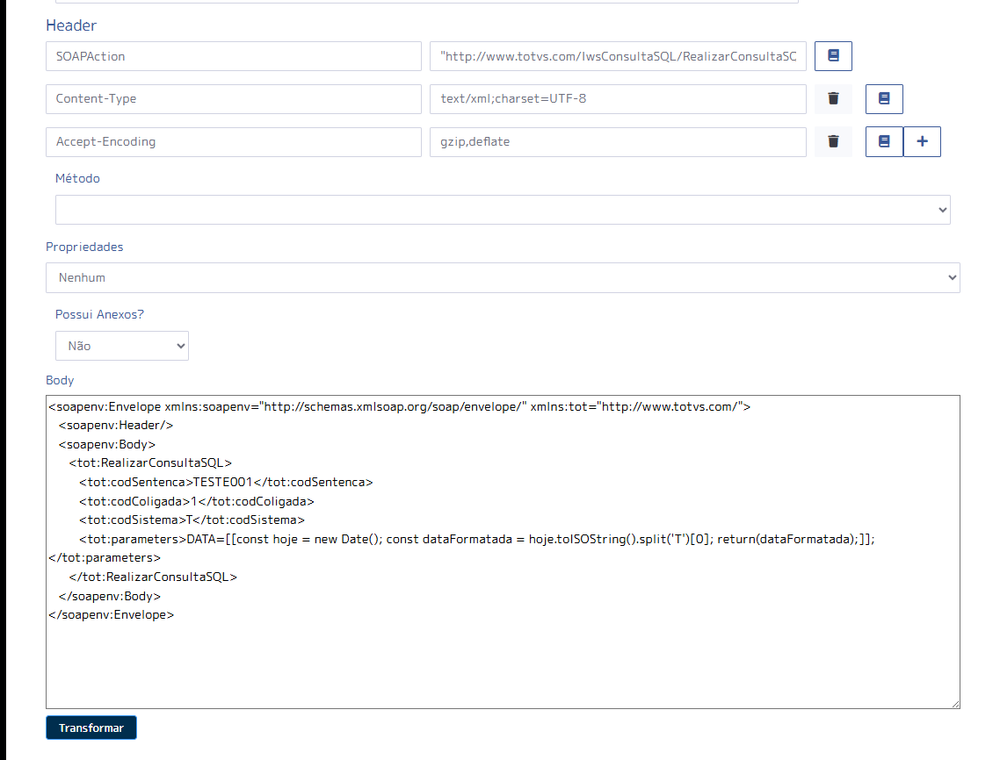
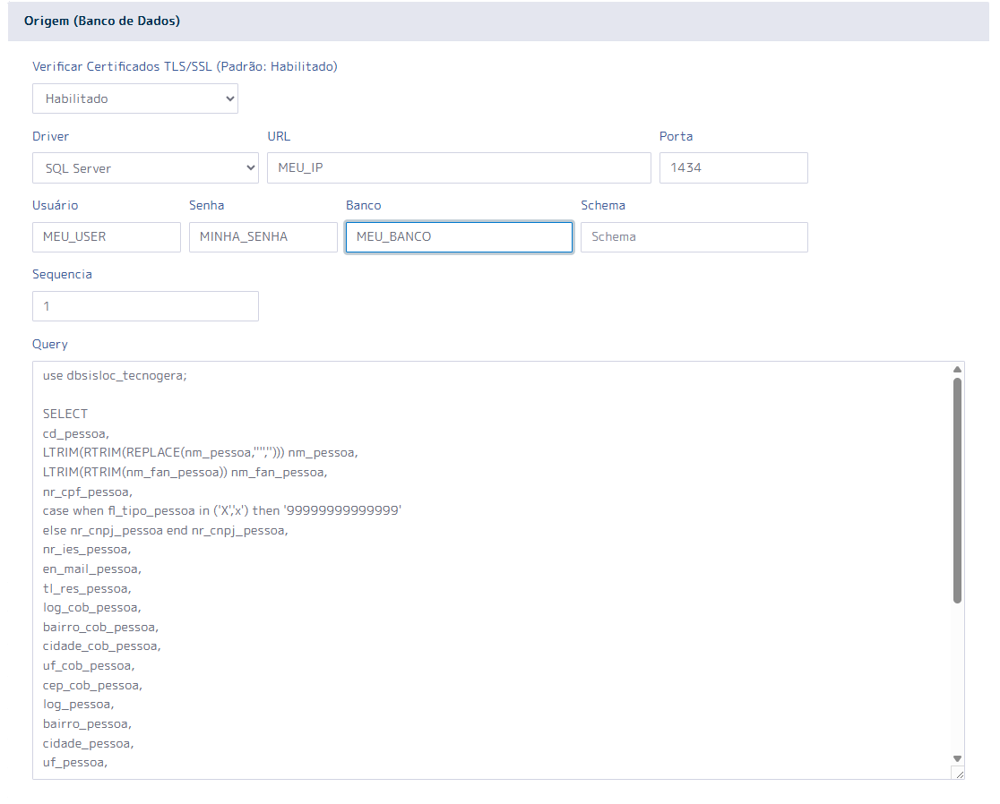
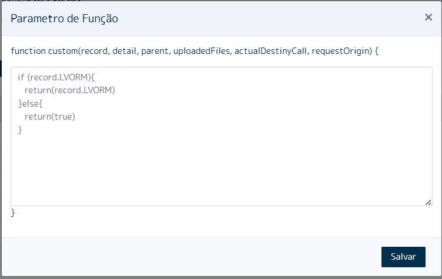
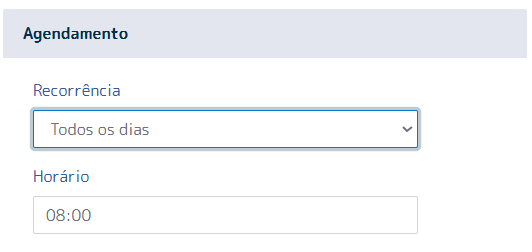

Bienvenido a la Documentación N4LINK
La plataforma N4LINK es un iPaaS (Integration Platform as a Service) que conecta sistemas legados y modernos de forma ágil, segura y escalable.
Sistemas ya integrados


Acceso a la Plataforma
Para acceder a la plataforma N4LINK simplemente use la URL: https://go.n4s-hip.com/signin, ingrese su correo electrónico y contraseña proporcionados por nuestro equipo:
Nuestra plataforma requiere el uso de MFA. En el primer acceso, será dirigido a la pantalla de lectura del QRCODE, donde podrá utilizar la aplicación de su preferencia (Google Authenticator, Microsoft Authenticator, etc).

Después de leer el QRCODE, haga clic en el botón "Continuar" para ser dirigido a la pantalla de ingreso del código MFA:

Si todo está correcto, será dirigido a la página inicial de la plataforma:

Estructura de Navegación
Nuestra estructura de navegación se basa en el menú que está en el lateral izquierdo, donde cada opción define cuál será el tipo de tecnología utilizada en la solicitud del origen. El registro de servicios sería origen REST, registro de base de datos sería origen base de datos, registro de SOAP sería origen SOAP, registro de archivos sería origen lectura de un FTP/SFTP de cualquier tipo de archivo (TXT, CSV, XML...), Registro de SAP-RFC sería para origen RFC's o BAPI's específicas del mundo SAP.

SERVICIOS EN EJECUCIÓN:
En el menú Panel de Control en la opción Servicios en Ejecución, tendrá acceso a todas las colas activas y cada conector en nuestra plataforma posee su cola propia. Es decir, habrá una cola para cada tema con opción de "PARAR" la cola, "REINICIAR", o incluso "ELIMINAR" mensajes.
VALIDAR COMUNICACIÓN:
Sirve como un facilitador para que la plataforma pruebe vía TELNET la comunicación con la URL proporcionada.
EXTRACTOR DE DATOS:
Herramienta similar al estudio SQL. Aquí es posible ejecutar sintaxis en su base de datos, si es su modelo y exportar a un excel o incluso validar la sintaxis de las consultas.
VARIABLES GLOBALES:
Es una forma de registrar contenidos, sea para no dejar expuesto en el conector o incluso facilitar construcciones utilizando estas variables sin tener que repetir contenidos.
CENTRO DE NOTIFICACIONES:
Crea alertas de manera activa, es decir, la plataforma envía un correo electrónico de acuerdo con lo que fue configurado. Ejemplo: Desea crear una alerta para que siempre que la respuesta del destino regrese ERROR 500, sea enviado automáticamente un correo electrónico al departamento de TI.
CARGA DE ARCHIVOS:
Hacer cargas de archivos csv, txt en una tabla del N4LINK, con posibilidad de acceder a los contenidos por los conectores. Ejemplo: Para generar las ventas del e-commerce para el ERP es obligatorio el registro específico, pero los datos no son transmitidos del e-commerce, pero con esta función, es posible crear una regla a partir de un campo del e-commerce para una planilla de Excel y determinar el contenido correcto para enviar al ERP.

Servicios En Ejecución
Aquí conforme reportado anteriormente, son las colas activas en nuestra plataforma, donde se muestra el ID del conector después del guión en la columna COLA:

En esta opción, es posible verificar las colas activas en la plataforma N4LINK, donde se muestra el ID del conector después del guión en la columna COLA.
COLUMNA COLA:
Se muestra su código de empresa en la plataforma N4LINK + ID del
conector.
COLUMNA EMPRESA:
Se muestra el nombre de empresa registrado.
COLUMNA ESTADO:
Indica la situación actual de la cola:
- VERDE indica que está en ejecución;
- AMARILLO indica que está en proceso de parar/reiniciar;
- ROJO indica que está parada.
COLUMNA ACCIONES:
- BOTÓN DELETE - elimina los mensajes de la cola, en la secuencia ya para la cola y la sube nuevamente
- BOTÓN PURGE - elimina los mensajes actuales de la cola
- Botón rojo (-) es el botón que para la cola
- Botón de RESTART - azul con dos flechas, una de encuentro a la otra - sirve para parar y subir nuevamente la cola
- Botón PLAY - verde - inicia la cola que está parada
Validar Comunicación
En esta pantalla puede validar si la dirección de origen (N4LINK) que puede ser probada como localhost, o si es una dirección más específica puede hablar con nuestro soporte para saber en específico cuál es la dirección LAN de la máquina que sus conectores están ejecutando, posee comunicación con otra dirección y puerto, es decir, se ejecuta un TELNET para demostrar si la comunicación está funcional, Ejemplo comunicación con Google:


Extractor de Datos
Configure su acceso con una base de datos en la cual nuestra plataforma posee conexión y ejecute consultas SQL o incluso, procedimientos para verificar si la sintaxis está funcional. Aún es posible extraer el resultado presentado para una planilla de Excel. En la opción de DRIVER, seleccione cuál es la base de datos. En URL existe el IP/Dirección que la base de datos está siendo ejecutada; PUERTO - cuál el puerto en que se encuentra la base de datos; USUARIO - haga el login que tiene acceso a la base de datos; CONTRASEÑA - ingrese la contraseña del login utilizado; BASE DE DATOS - ingrese el nombre de la base de datos a ser leída; SCHEMA - ingrese el schema, si es el caso. Ejemplo:


Variables Globales
Panel donde solamente los perfiles configurados como ADMINISTRADOR poseen acceso, es decir, puede crear variables que contienen datos para autenticación como ejemplo y compartir con quien vaya a crear los conectores solamente los nombres de las variables, blindando así, el contenido. Este proceso contribuye mucho para la productividad, pues no es necesario repetir contenidos en sus creaciones de Conectores. Pantalla que presenta su empresa y cuántas variables creadas posee:

Nuevo registro de variable:

Centro de Notificaciones
Central para configuración de alertas de manera activa vía correo electrónico. Es posible crear reglas específicas para cuando la condición sea válida y disparar un correo electrónico para el responsable del análisis del error. Pantalla inicial que presenta su empresa y cuántas alertas tiene registradas:

Pantalla para creación de una nueva alerta:
Ejemplo de creación de la estructura del correo electrónico, donde el contenido '{{destiny}}' es una variable global de la plataforma N4LINK que almacena toda la respuesta del destino.

Carga de Archivos
En esta interfaz, es posible subir archivos para utilizar los contenidos en sus conectores, sea para enriquecer o validar un dato. Esto es, tener datos en la plataforma donde ninguna de las puntas integradas conseguiría informar. Pantalla que presenta cuántos archivos subió para su empresa:
Pantalla para configuración de carga de un nuevo archivo. Seleccione el tipo (en el ejemplo abajo: CSV); Cuál el delimitador de contenidos (en el ejemplo: punto y coma (;)); Seleccione el archivo que quiere hacer carga (en el ejemplo: convert.csv); Guarde para confirmar la carga.

Integración vía REST
Para la configuración de integraciones con origen REST, menú Integraciones - Registro de servicios tendrá como pantalla inicial:

Para los conectores ya creados, visualizará: Botones de LOG responsables de almacenar todos los datos de una transacción ejecutada; Botón VIEW - presenta datos que fueron almacenados en una tabla intermedia, concepto utilizado cuando normalmente en el sistema de origen no es posible controlar lo que ya fue integrado para ser reenviado o no; Botón LAYOUT - almacena toda la configuración del conector; Botón CONTROL DE VERSIONES - botón gris al lado del botón LAYOUT; Botón de COPIA - es un facilitador. En este ítem, es posible reutilizar configuraciones de un conector ya producido; Botón PLAY - es utilizado para disparar la integración de manera inmediata. En la configuración del conector, sea uno nuevo o alteración de uno existente, el llenado del formulario REST es semejante a las herramientas de uso para prueba de API's del mercado. Un ejemplo práctico es POSTMAN, se selecciona si debe ser verificado el certificado de la dirección a ser consumida o no, el VERBO a ser utilizado, URL, Endpoint. Caso sea una API paginada, cuál es el concepto de paginación; caso tenga autorización, cuál el tipo utilizado, y los datos del HEADER, que es dinámico y puede ser insertado cuantos sean necesarios por el botón de agregar (+).

Integración vía SOAP
Para la configuración de integraciones con origen SOAP, menú Integraciones - Registro de SOAP, aparecerá como pantalla inicial:

Para los conectores ya creados visualizará: Botones de LOG - responsables de almacenar todos los datos de una transacción ejecutada; Botón VIEW - presenta datos que fueron almacenados en una tabla intermedia, concepto utilizado cuando normalmente en el sistema de origen no es posible controlar lo que ya fue integrado para ser reenviado o no; Botón LAYOUT - almacena toda la configuración del conector. Botón CONTROL DE VERSIONES - botón gris al lado del botón LAYOUT; Botón de COPIA - es un facilitador. En este ítem, es posible reutilizar configuraciones de un conector ya producido; Botón PLAY - es utilizado para disparar la integración de manera inmediata. En la configuración del conector, sea uno nuevo o alteración de uno existente, el llenado del formulario SOAP es muy semejante a herramientas de uso para prueba de API's del mercado. Por ejemplo SOAPUI, se selecciona lo que debe ser verificado, el certificado de la dirección a ser consumida o no, inserta el WSDL que contiene los métodos. Caso sea una API paginada, cuál el concepto de paginación, si existe autorización cuál el tipo utilizado, y los datos del HEADER, que es dinámico y puede ser insertado cuantos sean necesarios por el botón de agregar (+).
 Integración vía Archivos
Para la configuración de integraciones con origen FTP/SFTP para lectura de archivos, menú Integraciones - Registro de base de datos tendrá como pantalla inicial:

donde para los conectores ya creados encuentra los botones de LOG responsable de almacenar todos los datos de una transacción ejecutada, botón LAYOUT que almacena toda la configuración del conector, botón CONTROL DE VERSIONES que sería el botón gris al lado del botón layout, botón de COPIA que es un facilitador caso tenga como reutilizar las cosas de un conector ya hecho y el botón PLAY que es utilizado para disparar la integración de manera inmediata. En la configuración del conector sea uno nuevo o alteración de uno existente, el llenado del formulario para conectar y recolectar datos en la base de datos es muy parecido con herramientas de uso para conexiones en FTP/SFTP, coloca en la URL la DIRECCIÓN:PUERTO y al frente quebrando por barras si es el caso la navegación entre las carpetas, en el Ejemplo abajo después de logear y estar en la raíz del FTP estoy indicando para ir hasta la carpeta TESTE. Fuera de la parte de la conexión define como va a ser la quiebra de los archivos de la carpeta seleccionada, en el caso de nuestra prueba son todos archivos CSV quebrados por punto y coma (;). Aún tenemos en este sector un condicional para ignorar las líneas del archivo, sea para saltar el encabezado del archivo por Ejemplo o incluso descartar líneas basado en reglas, en el Ejemplo abajo estamos descartando todo lo que en la primera columna del archivo tenga el texto ORIGEM o DATA.

Ya para la sección de conversión de parámetros tenemos el tratamiento del dato en sí, donde indicamos cuál es la columna de origen y cuál el nombre del atributo que la API REST de destino va a recibir, ese mapeo puede ser del tipo Función donde se habilita un libro para inserción de funciones en javascript, un dato fijado sea de tipo TEXTO, NÚMERO o LÓGICO, o dinámico donde se toma exactamente el contenido del origen y se envía para el destino en el atributo configurado, entonces en el Ejemplo abajo tenemos la columna 14 yendo para el atributo taxIdTo en el destino, ya para la columna 7 que va para el atributo amount tenemos una función en javascript debido a ser un tratamiento más complejo del dato, transformar correctamente las unidades de millar, decena... Después transformar en el tipo FLOAT.


Integración vía Base de Datos
Para la configuración de integraciones con origen BASE DE DATOS, menú Integraciones - Registro de base de datos tendrá como pantalla inicial:

donde para los conectores ya creados encuentra los botones de LOG responsable de almacenar todos los datos de una transacción ejecutada, botón LAYOUT que almacena toda la configuración del conector, botón CONTROL DE VERSIONES que sería el botón gris al lado del botón layout, botón de COPIA que es un facilitador caso tenga como reutilizar las cosas de un conector ya hecho y el botón PLAY que es utilizado para disparar la integración de manera inmediata. En la configuración del conector sea uno nuevo o alteración de uno existente, el llenado del formulario para conectar y recolectar datos en la base de datos es muy parecido con herramientas de uso para conexiones vía JDBC de mercado, como por Ejemplo el DBEAVER, selecciona cuál es la base de datos que va a utilizar en el Ejemplo abajo SQL SERVER, URL, puerto, usuario y contraseña, y el SCHEMA solamente si es necesario, en el campo QUERY inserta su sintaxis sea una consulta, un procedimiento, en el Ejemplo abajo estoy armando un SELECT
Integración vía SAP RFC/BAPI
Para la configuración de integraciones con origen SAP ECC, menú Integraciones - Registro de SAP-RFC tendrá como pantalla inicial:

donde para los conectores ya creados encuentra los botones de LOG responsable de almacenar todos los datos de una transacción ejecutada, botón LAYOUT que almacena toda la configuración del conector, botón CONTROL DE VERSIONES que sería el botón gris al lado del botón layout, botón de COPIA que es un facilitador caso tenga como reutilizar las cosas de un conector ya hecho y el botón PLAY que es utilizado para disparar la integración de manera inmediata. En la configuración del conector sea uno nuevo o alteración de uno existente, el llenado del formulario para conectar es muy parecido con el llenado de los datos en el SAP LOGON GUI, donde llena el servidor de aplicación, si es SAP-ROUTER la URL del router, usuario, contraseña ID del sistema, número de la instancia, cliente e idioma. Después de los datos de conexión informa cuál es la RFC o BAPI a ser consumida, en el Ejemplo abajo es una RFC customizada llamada CADASTRO_MATERIAIS, en los parámetros de entrada informa los parámetros que la RFC/BAPI espera, en el Ejemplo abajo tenemos los parámetros fecha de (IM_LAEDA_DE) y el fecha hasta (IM_LAEDA_ATE)

Mapeo de Atributos Destino REST
Siempre que el Destino sea REST, independiente de la tecnología del origen (BASE DE DATOS, SOAP, ARCHIVO, SAP RFC/BAPI), va a existir en la página el conversor de parámetros. En la primera columna es posible configurar determinados atributos para popular la tabla intermedia de la plataforma y hacer el descarte caso retorne. En la segunda columna se puntúa el tipo del MAPEO. Puede ser: DINÁMICO - modelo que utiliza el contenido del origen y lo envía para el destino. En el ejemplo se está utilizando el contenido del atributo MATNR que está llegando y enviando para el atributo CODE en el destino. FIJO - puede ser un texto, un número o lógico. El ejemplo está fijando el contenido TRUE como dato lógico para mandar en el atributo is_integration, incluso una función. Vea en el ejemplo el atributo IS_ACTIVE que habilita un libro arriba para que pueda ser creada su función en javascript.

Cuando se utiliza el concepto de función al entrar en el editor (botón del libro) se muestra una pantalla para crear la función. En esta pantalla es posible utilizar variables globales de la plataforma para captar contenidos: Variable record - almacena los datos que regresaron de la solicitud del formulario origen; Detail - almacena el contenido de la solicitud del formulario detalle; Parent - almacena el contenido que llega del conector PADRE; Caso este concepto sea utilizado, uploadedFiles almacena archivos en csv que fueron subidos para la empresa. ejemplo abajo se hace un if simple donde caso exista en el origen el atributo LVORM, será retornado. Caso contrario, fijamos el retorno TRUE.
Estructura de Body Destino Base de Datos
Cuando el destino es base de datos es posible utilizar el concepto de dos llaves: abriendo y cerrando informando el nombre de atributo que llegó en el origen a ser utilizado. A partir de ahí, es posible estructurar su procedimiento de manera completa (INSERT, SELECT, UPDATE, etc) y donde desee cambiar los contenidos de acuerdo con los atributos que llegan en el origen. En el ejemplo abajo estamos llamando un procedimiento BDIPIERPROD donde en el parámetro CodBarras está siendo utilizado el contenido del atributo CODBARRAS que llega del origen REST.

Estructura de Body Destino SOAP
Cuando el destino es SOAP es posible utilizar el concepto de dos llaves: abriendo y cerrando informando el nombre de atributo que llegó en el origen a ser utilizado. En el ejemplo abajo hay el {{codigoCfo}} o también, es posible utilizar el concepto de dos corchetes, en el cual el contenido entre ellos es una sintaxis en javascript. Ejemplo: tag NOMEFANTASIA está retornando lo que llega de la solicitud del origen (variable record) tomando el atributo firstName que está dentro del objeto clientProfileData.

Estructura de Body Destino RFC
Cuando el destino es base de datos es posible utilizar el concepto de dos llaves: abriendo y cerrando informando el nombre de atributo que llegó en el origen a ser utilizado. A partir de ahí, es posible estructurar su procedimiento de manera completa (INSERT, SELECT, UPDATE, etc) y donde desee cambiar los contenidos de acuerdo con los atributos que llegan en el origen. En el ejemplo abajo estamos llamando un procedimiento BDIPIERPROD donde en el parámetro CodBarras está siendo utilizado el contenido del atributo CODBARRAS que llega del origen REST.
Configuración de Programación
Para programación, hay las opciones de recurrencia, divididos por hora, minuto o segundos:

Ejecución diaria - se informa un horario para ejecución:
Programación semanal - puntúa uno o más días de la semana y cuál horario ejecutar:

Programación mensual - informa apenas un día del mes para ejecución y cuál el horario:

Programación del tipo RANGO - informa un rango de horas del día para la ejecución y de cuánto en cuánto tiempo. En el ejemplo abajo fue configurado para ejecutar de la media noche hasta las seis de la mañana, con un disparo a cada 30 minutos.

API Oyente (Webhook)
Es posible configurar el conector para ser receptivo, en el cual, en el encabezado es posible informar que es un conector oyente y configurar un nombre de método a ser externalizado. La URL y el token son únicos para cada cliente y son informados por nuestro equipo en el momento de la creación del registro de la Empresa para liberación de uso en la plataforma.

En el ejemplo abajo la empresa N4LINK posee la URL: https://go.n4s-hip.com/public/23/ como base. Después de la última barra vendrá el método que será configurado como oyente. Ejemplo: Fue creado el conector abajo exponiendo el método /meuWebhook donde la plataforma está externalizando un verbo POST que irá a recibir un body de alguien que esté solicitándola. A partir del recibimiento de ese body es posible dar secuencia en otras actividades en el mismo modelo cuando es la plataforma que está solicitando. Ejemplo de URL y TOKEN disponibilizado por nuestro equipo:

Concepto Conector Padre
Existe la posibilidad de encadenar conectores para enriquecimiento de datos o incluso por cuestión de secuencia lógica. Ejemplo: Su empresa está integrando pedidos de un ecommerce. Obligatoriamente, antes de bajar el pedido es necesario registrar el cliente. Aquí, podría ser configurado para el conector de pedidos llamar el conector de clientes primeramente y solo después de ese proceso, el cliente ser integrado para bajar el pedido de venta. Es posible informar al conector padre, cuál es el tipo de ejecución: si es ejecutado registro a registro o solamente después del último registro integrado al conector padre o, incluso, si debe seguir en caso de error en el conector padre o no.